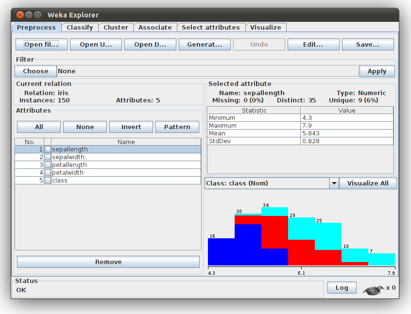
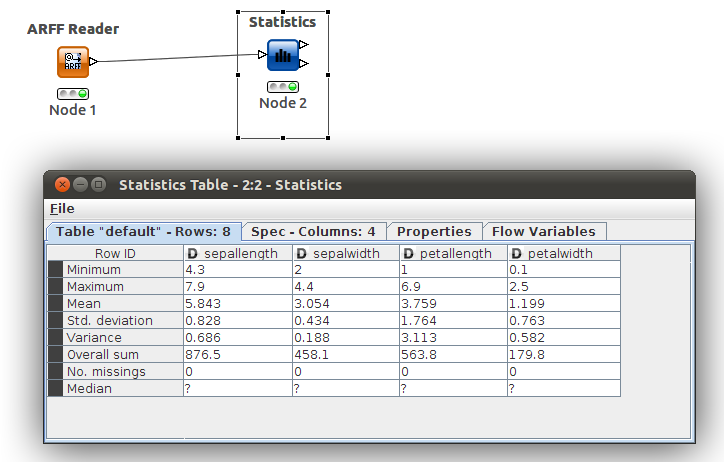
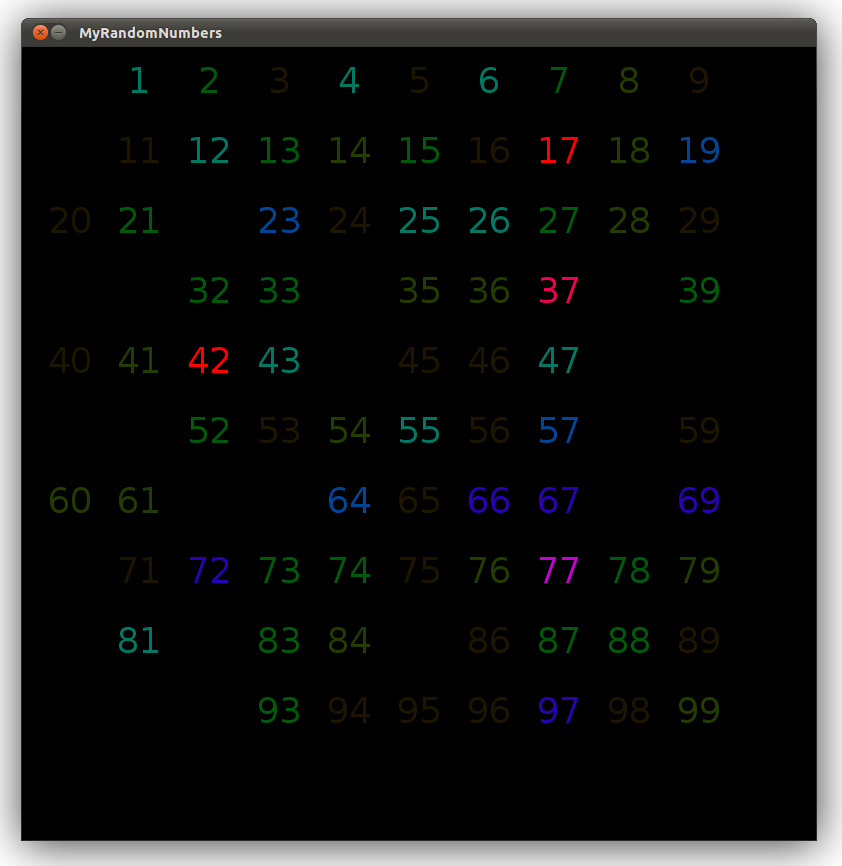

A thorough understanding of available data is the very foundation on which any successful data mining project is built. As interesting data is produced in practically all domains of human knowledge, a variety of distinct data generating processes exist. This has resulted in many potential dataset types as well as various kinds of data quality issues. Another important way in which data is characterized is by the the type and number of attributes that exist, which can be the most constraining aspect of a project. The best way to address this issue is with data preprocessing, which is usually the most time consuming stage of an investigation and the most crucial to get right. Once the data is in usable form, it is at once amenable to exploration and visualization.
Each type of dataset has its own interesting set of properties which can suggest paths for exploration as well as determine the most suitable methods for analysis. Dimensionality (number of attributes) and sparsity (frequency of missing values) can severely impact most data mining algorithms in terms of performance and result quality, unless specifically accounted for with with preprocessing or in the algorithm itself [1]. A common example of such data is the document term matrix, which shows up frequently in web analytics (e.g. page indexing, clickstream analysis). Also similar are adjacency matrices, which can be used to express many kinds of graphs. Finally, ordered data deserves some consideration. Such a dataset is composed of objects with a total ordering, such as spacial (e.g. GIS) or time-series (e.g. weather buoy) data. An interesting aspect of such data is that it is often auto-correlated; that is, objects that are relatively close in sequence tend to share similar attributes. This is the case for data collected by the weather buoy, as the relevant data-generating process undergoes very little change over small intervals. A common way to alleviate this issue involves the consideration data resolution. In this case, we can choose to lower the resolution by aggregating the readings over a significant enough time interval so as to bring out meaningful variations in the sequence.
The kinds of data values present in a dataset are a direct side effect of the acquisition method used. Roughly speaking, these values can be described as either numerical or categorical. Numerical values are usually the result of direct measurement, and can be expected to suffer from varying degrees of systematic error, which should be noted if documented with the initially provided data. These values are usually continuous in nature, meaning that there are infinitely many acceptable values. Conversely, categorical data is discretely valued (a countable number of values), and often the product of human observations. Therefore such values tend to be influenced by human error, which can involve consistent discrepancies such as one user rating items on a different scale or with a different range of values than another; this kind of bias is to be expected and accounted for in the preprocessing stage of mining the data. If a categorical attribute only has two possible values, it is considered to be a binary attribute. This kind of data deserves special attention due to the fact that it is the end result of a variety of data collection methods. For example, when stored in binary format, market basket data is very sparse and therefore needs to be regarded as a set of symmetric attributes in order to avoid the negative effects of sparsity described above. Finally, categorical attributes can also take on values from an ordered range; this requires special consideration during preprocessing, lest the order of values be disturbed.
Data mining typically involves performing analysis independently from data collection, and therefore it is often not possible to know or let alone control the conditions under which initial data collection occurs. This can result in data quality issues both in terms of missing or erroneous values and irrelevant or confounding attributes. As mentioned above, human generated data requires special consideration; this is because humans are relatively inconsistent in their behavior when compared to computers. For example, human users may forget details or suffer from errors in judgment when reporting data. To compensate for this, it's important to give users the opportunity to correct their mistakes [2]. Beyond human error, the appearance of noise and anomalies is to be expected under uncontrolled circumstances; it's likely for unperceived mechanisms to be at work generating spurious data. In the case of missing measurements or observations, it may be necessary to decide how important a record is before discarding it, as we may instead choose to estimate any missing values based on those that aren't missing. Other causes of poor data quality may be unrelated to the collection process. Consider the consequences of accidentally duplicating data, or allowing data to lose its relevance by sitting in a data warehouse for many years. Such is obviously the case for market basket data, as consumer buying trends tend to change over time due to fluctuations in the economy. Ultimately it's important for data to be properly documented so that its quality may be judged independently by future analysts.
Data exploration is the an important step in determining what kind of information can be gathered from a particular data set, and whether or not that information is worth the effort of retrieving. If so, an analyst can use gathered insights to formulate their approach to the analysis and choose any relevant parameters. It's also quite frequently the case that data exploration suggests further preprocessing that can be done. Some of the more useful summary statistics that can be computed during this step include mean, median, standard deviation, correlation, frequency, and entropy; the appropriateness and importance of each depends on the nature of the data as well as the knowledge domain that it originates from. If the standard statistics prove unsatisfactory in describing the data set, further inspection with visualization may be in order.
Data mining software packages can also be useful for gaining a quick first impression of the data set from standard summary statistics and visualizations:
Figure 1. Summary statistics available in WEKA for the Iris data set.
Figure 2. Summary statistics available in KNIME for the Iris data set.
The objective of visualization is to make information more tractable to the human brain, to organize it logically around the way people tend to think. The Periodic Table is an excellent example, as it emphasizes the most important relationships so as to facilitate discovery [3]. When designing new visualizations, it is important to convey a story which includes only those data and aesthetic elements that help describe it, so as to reflect the qualities of the data being represented. By understanding the context of use and the nature of the intended audience, it's possible to bring out the most relevant and thought-provoking features in the data, which can facilitate further discovery. In summary, effective visualization is useful, relevant, and efficient because it emphasizes what matters most to the intended audience.
The following is an example of such a visualization created in Processing which emphasizes the fact that humans tend to be biased when asked to generate random numbers.
Figure 3. Processing Visualization.